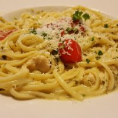

Pasta

Description
Pasta is a beloved staple of Italian cuisine, made from wheat flour and water or eggs, and formed into various shapes like spaghetti, penne, or fusilli. It is typically boiled and served with a wide range of sauces—from simple tomato and basil to rich, creamy Alfredo or hearty meat ragù. Versatile and satisfying, pasta is enjoyed worldwide as a comforting and endlessly customizable dish.
Ingredients
- 2 cups flour
- 3 large eggs, at room temperature
- 2 tablespoons olive oil
- 1 teaspoon salt
- 2 tablespoons water, or as needed
Steps
- Gather all ingredients.
- Mix flour, eggs, olive oil, and salt in a bowl until combined. Add water, 1 teaspoon at a time, to flour mixture until a smooth, thick dough forms.
- Turn dough out onto a lightly floured work surface and knead for 10 minutes. Let dough rest for 5 to 10 minutes.
- Divide dough into 8 balls; use a pasta machine to roll and cut dough into desired pasta shape.
Home